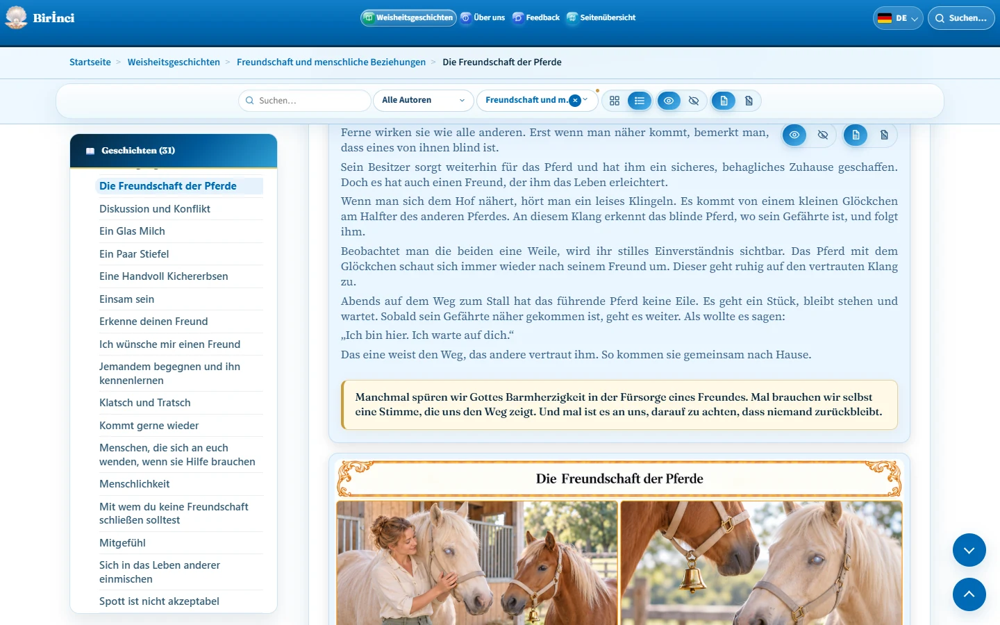

Geschichtentext und Illustrationen
Eine Geschichte besteht aus Titel, Text, Moral und Illustration. Die Moral steht in einem hellcremefarbenen Feld. Illustrationen auf Geschichtenseiten sind beim ersten Besuch sichtbar. Du musst sie nicht zuerst über den Schalter zum Anzeigen einschalten.
Mit dem Bildschalter zum Ausblenden verbirgst du eine Illustration; mit dem Schalter zum Anzeigen holst du sie zurück. Für den Text gibt es eigene Schalter. Text und Bild lassen sich nicht gleichzeitig ausblenden: Mindestens eines bleibt sichtbar. Auf Smartphones können die Textschalter fehlen, während der Text lesbar bleibt.
Beachte die Autorenangabe und konkrete Quellen, soweit vorhanden. Derselbe allgemeine Quellenhinweis wird nicht mehr unter jeder Geschichte wiederholt. Ein allgemeiner Hinweis zur Bearbeitung und zu KI-generierten Illustrationen kann im Einleitungstext stehen; er ist keine individuelle Autorenangabe.
Um eine Geschichte zu teilen, kopiere nach dem Aufrufen ihre Browseradresse. Behalte das # und die Kennung am Ende bei, zum Beispiel #friendship-of-horses.

